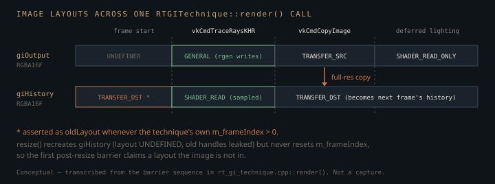

Monograph · Tree · ← Module hub · RT GI technique
hybrid
RT GI technique
1-bounce GI inject, material albedos.
One bounce, and the recursion cap that enforces it
The deferred pipeline's ambient term is one uniform scalar times albedo times AO —
vec3 ambient = vec3(lighting.ambientIntensity) * albedo * ao;shaders/core/deferred_lighting.frag:259with two equirect samples of the environment map, one standing in for diffuse irradiance and one for specular, added into the same accumulator when an env map is bound. Neither branch can know that a red wall stands beside a white floor, so the floor stays white. `RTGITechnique` replaces that guess with traced rays — but exactly once. The pipeline is created with a recursion limit of one, which is not a tuning knob but the premise the rest of the design rests on:
pipelineInfo.maxPipelineRayRecursionDepth = 1; // 1-bounce GIohao/render/rt/rt_gi_technique.cpp:399A closest-hit shader that cannot re-trace cannot ask "how much light reaches this point?" It can only report what it is. So it returns two numbers and stops — the instance's albedo and the hit distance, in one `vec4` payload whose alpha doubles as the miss flag:
giPayload = vec4(albedo, gl_HitTEXT);shaders/rt/rt_gi.rchit:27The bounce surface's illumination is then invented back in the raygen.
The estimator is exact; the radiance it integrates is not
For a Lambertian receiver of albedo $\rho$, outgoing radiance is
Drawing directions with density $p(\omega) = \cos\theta/\pi$ — a cosine-weighted hemisphere around the shading normal — makes the Monte-Carlo weight collapse completely:
with $N$ the ray count, $\omega_k$ the $k$-th sampled direction and $\theta_k$ its angle to the normal. That cancellation is why the receiver's $\pi$ and its $\cos\theta_k$ appear nowhere in the accumulation loop: the shader averages the radiances it got back and multiplies once by the receiver's GBuffer albedo, and that *is* the whole estimator. A cosine does appear inside that loop, but it belongs to the *bounce* surface — it is part of $L_i$, invented below.
vec3 dir = cosineSampleHemisphere(rng, N);shaders/rt/rt_gi.rgen:89indirectLight *= albedo;shaders/rt/rt_gi.rgen:125The outer estimator is therefore unbiased — for the hemisphere it actually samples. Two hard-coded constants shrink that hemisphere first. Rays start 0.05 world units off the shading point along the normal, so an occluder nearer than that is invisible to the integral:
vec3 origin = worldPos + N * 0.05; // bias to avoid self-intersectionshaders/rt/rt_gi.rgen:75and the trace truncates the domain at `tmax`, a hundred units out:
origin, 0.01, dir, 100.0, 0);shaders/rt/rt_gi.rgen:98Both are biases in the outer integral, not in $L_i$, and both quietly assume a metre-ish scene scale. $L_i$ is where the larger errors live. Since the hit shader returned only an albedo, the raygen reconstructs the bounce surface's own direct lighting from the one light packed into the push constants — an inverse-square falloff softened by one:
float falloff = pc.lightPosAndIntensity.w / (1.0 + lightDist * lightDist);shaders/rt/rt_gi.rgen:113and a cosine term that substitutes the negated ray direction for the hit surface's normal:
float hitNdotL = max(dot(normalize(toLightFromHit), -dir), 0.0);shaders/rt/rt_gi.rgen:116Three approximations stack in that reconstruction, each with a visible signature. Using $-\omega_k$ as the hit normal is exact only when the ray strikes a surface head-on; at grazing incidence the cosine is simply wrong. The `+1` kills the singularity at zero distance but darkens everything within about one world unit of the lamp. And there is no shadow ray from hit point to light, so a bounce surface contributes even with a wall between it and the lamp: indirect light leaks through geometry.
A fourth hides in the choice of light. That single light is whichever the deferred renderer ranks brightest that frame:
if (lc->getIntensity() > bestIntensity) {ohao/render/deferred/deferred_renderer.cpp:444The loop compares intensity and reads nothing else — never `getLightType()`, though the enum has four members:
Directional = 1, // sun/moon (parallel rays)ohao/scene/component/light_component.hpp:12Whatever wins is handed to the shader as a position and a scalar, the position being the light actor's transform. A directional sun therefore becomes a point lamp parked at that transform with $1/(1+d^2)$ falloff: wrong incident direction and wrong falloff at every bounce point, not merely dim. For one point lamp the single-light restriction itself costs nothing. With two comparable lights roughly half the indirect energy is absent, and the bleed colour snaps when the ranking flips.
Two filters for geometry that no longer exists
The raygen traces with a visibility mask of `0x01`, meaning "static geometry only":
uint rayMask = 0x01; // RT_RAY_MASK_STATIC (see rt_visibility.hpp)shaders/rt/rt_gi.rgen:84Vulkan intersects an instance when `ray_mask & instance_mask` is non-zero. Every instance the TLAS builder adds gets `MASK_STATIC_ONLY`, which is `0xFF`, because skeletal animation was removed from the engine:
uint32_t instanceMask = rt::MASK_STATIC_ONLY;ohao/gpu/vulkan/rt_build.cpp:866so the AND never rejects anything. Underneath it sits a *second*, independent filter — the source comment reports `traceRayEXT`'s cull mask being ignored on an RTX 5070, so the same test was re-implemented in the hit shader as an alpha test on the material buffer:
if (isStatic < 0.5) {shaders/rt/rt_gi.rchit:22That one is inert too. The alpha comes from an optional `flags` argument defaulting to 1.0, and the technique's only caller passes albedos alone:
float alpha = (i < flags.size()) ? flags[i] : 1.0f;ohao/render/rt/rt_gi_technique.cpp:196if (gi) gi->setMaterialAlbedos(materialAlbedos);ohao/gpu/vulkan/rt_build.cpp:914Both mechanisms still execute — the mask in TLAS traversal, the alpha test on every hit — and neither can currently reject anything. Worth knowing before someone "fixes" the workaround by wiring flags in and discovers half the scene stopped bleeding. The header meant to keep the two sides in sync, `shaders/rt/includes/rt_masks.glsl`, has no `#include` anywhere in the tree: the two raygen shaders that use the mask, `rt_gi.rgen` and `rt_shadow.rgen`, each spell `0x01` as a literal.
A temporal filter of one lerp
The deferred renderer overrides the class default of 4 rays per pixel with 32, every frame, before each dispatch:
m_rtGI->setSampleCount(32); // quality over speedohao/render/deferred/deferred_renderer.cpp:451That still leaves visible noise, so the raygen ends with an exponential moving average against the previous frame:
float blendFactor = (frameIndex == 0u) ? 1.0 : 0.3;shaders/rt/rt_gi.rgen:131For static geometry and per-frame-independent noise, an EMA of weight $\alpha$ has variance
relative to one frame's estimate. At $\alpha = 0.3$ that is $0.176$, an effective window of $(2-\alpha)/\alpha \approx 5.7$ frames — so 32 traced rays would behave like about 180 for a camera holding still, *if* successive frames drew independent samples. Nothing here establishes that. The sampler is a deterministic hash, and `hash2` is one 1D hash evaluated twice, at `p` and at a fixed offset from `p`, so both coordinates of every 2D sample leave the same generator:
return vec2(hash(p), hash(p + vec2(127.1, 311.7)));shaders/rt/rt_gi.rgen:37All that separates sample $s$ of frame $f$ from its neighbours is a float offset added to the pixel coordinate — `s * 7.13 + frameIndex * 1.618` in x, `s * 13.37` in y. No test in the tree measures the resulting correlation, so 180 is a ceiling, not a measurement.
"Holding still" is load-bearing. History is sampled at the *current* pixel's UV with no reprojection and no motion vectors, so under camera motion the filter blends in indirect light computed for a different surface. The `frameIndex` gating the bootstrap is the technique's own monotonic counter — not `GIInput::frameIndex`, which the deferred renderer dutifully fills from wall-clock time and this technique never reads:
pc.params = glm::uvec4(input.width, input.height, m_sampleCount, m_frameIndex);ohao/render/rt/rt_gi_technique.cpp:671Since that counter only increases, there is no history invalidation: not on a camera cut, not on a scene reload. The one frame that ignores history is the first the technique ever renders.
The image dance, and the resize that breaks it

History is not a ping-pong pair. It is a full-resolution `vkCmdCopyImage` of the output at the end of every frame — a redundant read-write of the whole RGBA16F surface, bought for descriptor views that never alternate. The barrier before the trace declares the history image's incoming layout conditionally:
barriers[1].oldLayout = (m_frameIndex == 0) ? VK_IMAGE_LAYOUT_UNDEFINED : VK_IMAGE_LAYOUT_TRANSFER_DST_OPTIMAL;ohao/render/rt/rt_gi_technique.cpp:651which is correct exactly as long as the history image is the same object it was last frame. `resize()` breaks that: it destroys and recreates the *output* trio, then calls `createOutputImage()` —
createOutputImage();ohao/render/rt/rt_gi_technique.cpp:739— which unconditionally allocates a second image into the history handles too:
imageInfo.usage = VK_IMAGE_USAGE_SAMPLED_BIT | VK_IMAGE_USAGE_TRANSFER_DST_BIT;ohao/render/rt/rt_gi_technique.cpp:144So a resize leaks the old history image, memory and view; the replacement sits in `UNDEFINED` while `m_frameIndex` is still large, so the next barrier claims `TRANSFER_DST_OPTIMAL` for an image never in it, and the blend weight stays 0.3 instead of the bootstrap 1.0. One resize mixes 70% of uninitialised memory into the following frame.
The sampler has a lifetime problem of the same family: created inside `render()`, written into the descriptor set, and destroyed before the function returns —
vkDestroySampler(m_device, sampler, nullptr);ohao/render/rt/rt_gi_technique.cpp:724— before the command buffer referencing those descriptors is even submitted.
One more dependency is missing from the graph rather than from `render()`. The RTGI pass declares reads on the normal and albedo handles only:
builder.readComputeTexture(m_graphAlbedoHandle);ohao/render/deferred/deferred_renderer.cpp:420while the raygen also samples GBuffer position at binding 2 — the attachment the sky test and every ray origin key off. There is no handle to declare: `importGraphTextures` imports depth, normal, albedo, the CSM shadow map, SSAO and the lighting target, never position. The pass rides instead on the GBuffer render pass's `finalLayout`, whose one outgoing subpass dependency targets `FRAGMENT_SHADER` — not `RAY_TRACING_SHADER_BIT_KHR`.
The alternative to the copy is two images and an index that flips each frame, which costs nothing. The copy buys a descriptor set written once per frame with fixed views — the same instinct that re-writes all eight descriptors every `render()` rather than caching them. Simplicity traded for full-res bandwidth, and the first thing to revisit if this pass ever needs to be fast.
160 bytes of push constants for 32 the shader reads
`GIPushConstants` is two `mat4`s, a `vec4` and a `uvec4` — 160 bytes, all declared:
pushRange.size = sizeof(GIPushConstants);ohao/render/rt/rt_gi_technique.cpp:378The raygen reads the `vec4` and `uvec4` only. It never touches `invView` or `invProj`, because it reconstructs nothing from depth — world position arrives straight from GBuffer0. Those unused matrices are 128 of the 160 bytes, and 160 exceeds the 128-byte `maxPushConstantsSize` floor the Vulkan specification guarantees. Nothing checks it: no code path in the engine ever reads `maxPushConstantsSize`. A device at the floor violates VUID-VkPipelineLayoutCreateInfo-pPushConstantRanges-00292, whose runtime consequence is undefined — not a guaranteed error code to branch on. Should `vkCreatePipelineLayout` return failure anyway, the fallback is orderly and loud:
std::cerr << "[RTGI] Failed to create pipeline layout" << std::endl;ohao/render/rt/rt_gi_technique.cpp:388`init()` then returns false, the renderer prints `DeferredRenderer: RTGI not available`, and the frame runs without GI. Soft, but not silent.
The binding that names direct light and holds depth
Binding 5 is declared as the current frame's direct lighting, in the descriptor layout and again in the raygen:
layout(set = 0, binding = 5) uniform sampler2D directLighting; // current frame's direct lightshaders/rt/rt_gi.rgen:14`render()` fills that slot with the GBuffer *depth* view, under `SHADER_READ_ONLY_OPTIMAL` while the GBuffer render pass leaves depth in `DEPTH_STENCIL_READ_ONLY_OPTIMAL`:
directLightInfo.imageView = input.depthBuffer;ohao/render/rt/rt_gi_technique.cpp:556Nothing samples it: `directLighting` occurs exactly once in the whole shader tree, in that declaration, so the mismatch costs nothing today. It matters as a trap. Binding 5 is the obvious home for the fix this page keeps circling — a bounce surface's real incident light, read from the frame's own direct lighting instead of re-derived from one push-constant lamp — and the slot already holds a depth image.
Where the bleed lands
The output is bound to the deferred lighting pass through the slot SSGI was built for, binding 11, gated by a flag bit set purely by that view being non-null. The lighting shader adds it to ambient, modulated by AO:
ambient += ssgiColor * ao;shaders/core/deferred_lighting.frag:265Note the missing `albedo` factor. That is a cross-file contract: the raygen already multiplied by the receiver's albedo when the estimator collapsed, so a second multiply here would square the surface colour. That same `ambient` accumulator is where IBL lands when an env map is bound, so GI and image-based lighting are additive, not exclusive.
The bind must happen before the render graph executes, though not for the reason the call site suggests. `DeferredLightingPass::execute` rewrites its entire descriptor set as its first act, so descriptor staleness is not the hazard. What `execute` reads and cannot recover from is the *member* `m_ssgiView`: once to raise flag bit 3, without which the shader never samples binding 11 at all —
if (m_ssgiView != VK_NULL_HANDLE) m_params.flags |= 8; // SSGIohao/render/deferred/deferred_lighting_pass.cpp:174— and once, inside that descriptor rewrite, to choose the real view over the dummy fallback. Both happen during `m_renderGraph.execute`, so the view has to be set before that call:
m_lightingPass->setSSGITexture(giOut.indirectLightView, VK_NULL_HANDLE);ohao/render/deferred/deferred_renderer.cpp:489This is a one-bounce *irradiance-from-albedo* estimator, not a miniature path tracer. The Monte-Carlo outer layer is textbook-correct; every approximation lives in what the hit shader is permitted to know, which is one `vec4`.
Contracts
- The raygen multiplies indirect light by the receiving surface's albedo before writing. Any consumer of binding 11 must not multiply by albedo again.
- The material buffer is indexed by `gl_InstanceID`, so `setMaterialAlbedos` must receive albedos in exactly TLAS instance order — the build loop collects both in one pass for that reason. Instances past the supplied list keep the 0.8 grey default, but only as far as index 255: the SSBO is 256 `vec4`s, the descriptor's `range` matches, the closest-hit shader clamps nothing, and the TLAS build loop caps instance count at nothing. Instance 256 reads past the bound range, on a device created without `robustBufferAccess`.
- `setSSGITexture` must run before `m_renderGraph.execute`, or that frame's lighting pass takes the dummy view and never raises the SSGI flag bit. The `updateDescriptorSets()` beside it in the renderer is redundant — `execute()` rewrites the set itself.
- `resize()` must reset the frame counter and release the history image. Today it does neither.
- The sky test is `worldPos == vec3(0.0) && posSample.a == 0.0`, matching the GBuffer0 clear exactly, so a surface at the world origin with metallic 0 gets no GI.
Source files
shaders/core/deferred_lighting.fragohao/render/rt/rt_gi_technique.cppshaders/rt/rt_gi.rchitshaders/rt/rt_gi.rgenohao/render/deferred/deferred_renderer.cppohao/scene/component/light_component.hppohao/gpu/vulkan/rt_build.cppohao/render/deferred/deferred_lighting_pass.cppohao/render/rt/rt_gi_technique.hppshaders/rt/rt_gi.rmissParent hub for the full pipeline narrative; this page is the file-level design unit. Sitemap · hover glossary terms anywhere.